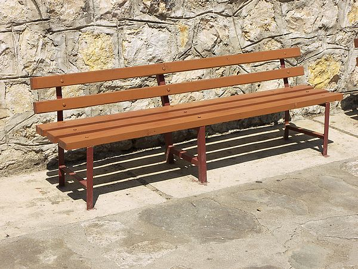
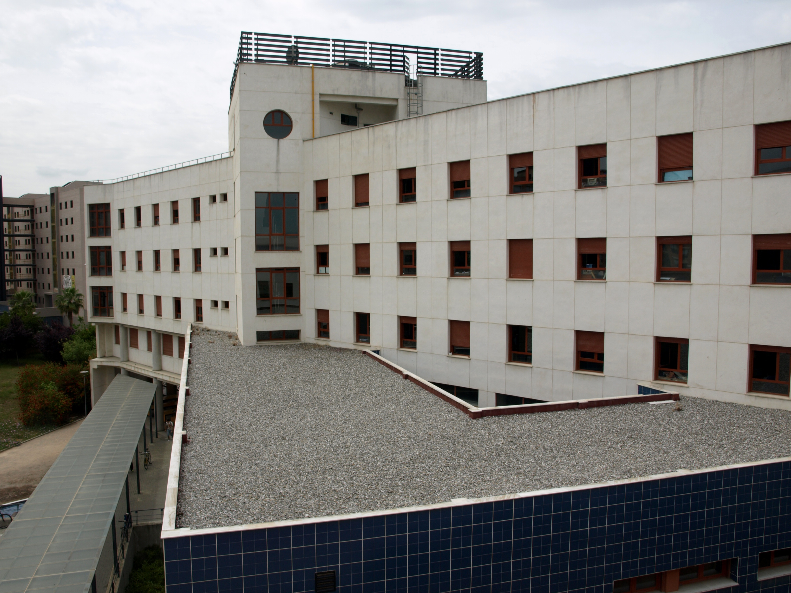
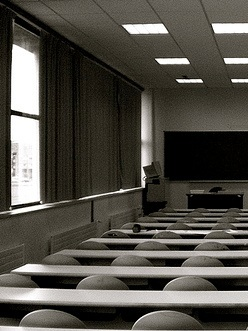
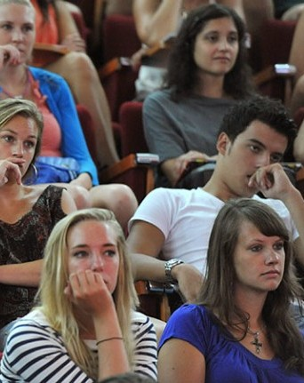
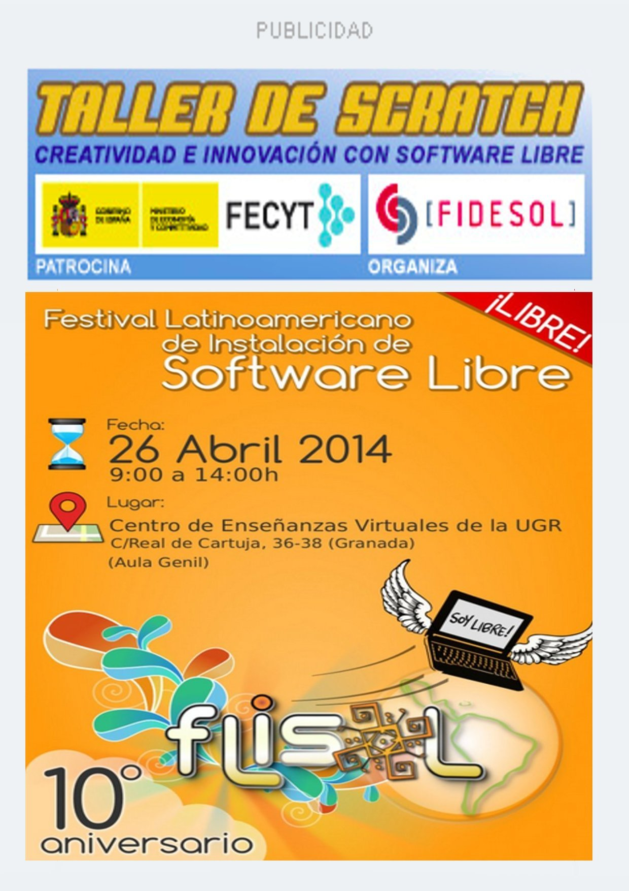

El misterio de los bancos
Aunque desde la dirección aseguran que sólo se trata de un
pequeño retraso en la instalación varios estudiantes aseguran haber
visto como los profesores meriendan sentados en ellos.

Banco de la entrada principal
02-04-2014Fraude en Londres
"Hemos sido victimas de una oferta de trabajo engañosa donde se nos prometió un
salario que no era real y al que se aplicaron sucesivas reducciones hasta convertirse
en el mínimo que la legistlación inglesa permitía."
05-04-2014Fiesta en la escuela
Sumándose a la famosa fiesta de la primavera, los estudiantes
de la ETSIIT la hacen a su manera. El resultado no podía
ser distinto, 100kg de basura recogida por el servicio de limpieza.
Estado del suelo a la mañana siguiente.
02-04-2014El misterio de los bancos
Aunque desde la dirección aseguran que sólo se trata de un
pequeño retraso en la instalación varios estudiantes aseguran haber
visto como los profesores meriendan sentados en ellos.
02-04-2014Nos cambiamos de lugar
Desde el dia 1 de Mayo el despacho de delgación será oficialmente la antigua sala de usos
múltiples del edificio A (despachos y secreataría). Ampliamos los servicios y el espacio para
acoger desde asociaciones hasta grupos de trabajo en mejores instalaciones.

Vista del aula de usos múltiples.
02-04-2014Clases al fresco
Acercándose la Semana Santa vemos como las faltas a clase se multiplican. Los profesores optan
por cambiar las formas y deciden dar clases a los que han quedado de forma muy personal y
con un trato muy cercano en los bancos y lugares de recreo de la escuela. Los resultados no se
han hecho esperar.
Banco de la entrada principal
02-04-2014Erasmus PRO
Desde delegación seguimos muy cerca la estancia de algunos de los estudiantes
de Erasmus que nos representan en el exterior, algunos de ellos dejando el liston
muy alto. Ahora intentamos que se les reconozca su esfuerzo y se crean premios
especiales para los que mejor resultados traigan a su vuelta.
02-03-2014Examenes a la vuelta de la esquina
Dejando atrás la Semana Santa de poco descanso para la mayoría
empieza la cuenta atrás para los exámenes de junio. Nervios, café y
complejos vitamínicos pueden ser el peor aliado de los estudiantes
que cada vez se planifican peor.

Aula 1.3, donde se realizan muchos exámenes.
12-03-2014Erasmus PRO
Desde delegación seguimos muy cerca la estancia de algunos de los estudiantes
de Erasmus que nos representan en el exterior, algunos de ellos dejando el liston
muy alto. Ahora intentamos que se les reconozca su esfuerzo y se crean premios
especiales para los que mejor resultados traigan a su vuelta.
02-03-2014Junio se acerca
Dejando atrás la Semana Santa de poco descanso para la mayoría
empieza la cuenta atrás para los exámenes de junio. Nervios, café y
complejos vitamínicos pueden ser el peor aliado de los estudiantes
que cada vez se planifican peor.

Aula 1.3, donde se realizan muchos exámenes.
12-03-2014
noticia flash!
Alteración de Matrícula
Los incidentes ocurridos en peridodo de alteración de matrícula
hacen perder los nervios al personal de administración.
"El sistema inormático es un desastre" -Maria Ester- Coordinadora
General
12-03-2014
noticia flash!
Becas para erasmus
Una nueva inyección económica hace posible que la beca Erasmus
llegue a 50 estudiantes más. Europa del este y Estados Unidos los
principales objetivos de nuestra fuga de cerebros temporal.
12-03-2014
noticia flash!
Alteración de Matrícula
Los incidentes ocurridos en peridodo de alteración de matrícula
hacen perder los nervios al personal de administración.
"El sistema inormático es un desastre" -Maria Ester- Coordinadora
General
12-03-2014
noticia flash!
Becas para erasmus
Una nueva inyección económica hace posible que la beca Erasmus
llegue a 50 estudiantes más. Europa del este y Estados Unidos los
principales objetivos de nuestra fuga de cerebros temporal.
12-03-2014
